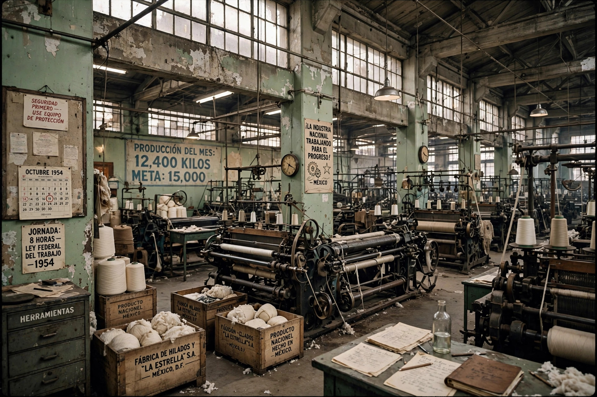

Import substitution industrialization (ISI) is an economic policy under which a country replaces foreign imports with domestic production, using tools such as high tariffs, import quotas, subsidised credit, and overvalued exchange rates. It was widely adopted in Latin America and parts of Asia and Africa from the 1930s through the 1970s.

ISI drew intellectual support from Raúl Prebisch and the UN Economic Commission for Latin America, which argued that primary-commodity exporters faced declining terms of trade. The Great Depression and wartime shortages had already pushed countries such as Brazil, Mexico, and Argentina to produce consumer goods at home; governments then extended protection to intermediate and capital goods.
ISI built significant industrial bases but often produced inefficient, small-scale firms sheltered from competition, balance-of-payments crises, and fiscal strain. After the debt crises of the 1980s, most countries shifted toward export-oriented and market-liberalising policies, though economists continue to debate ISI's record and the role of industrial policy in successful East Asian development.